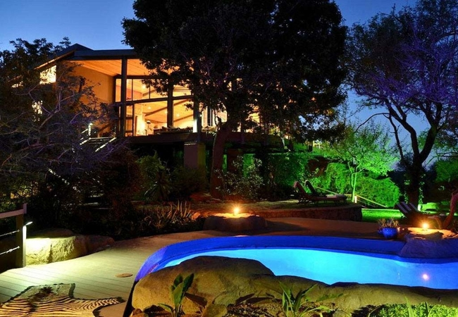
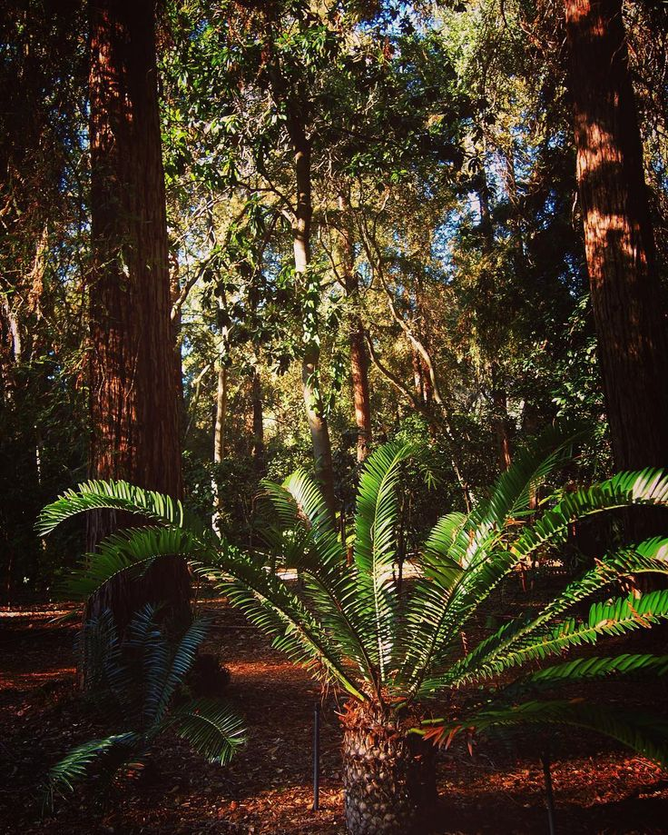
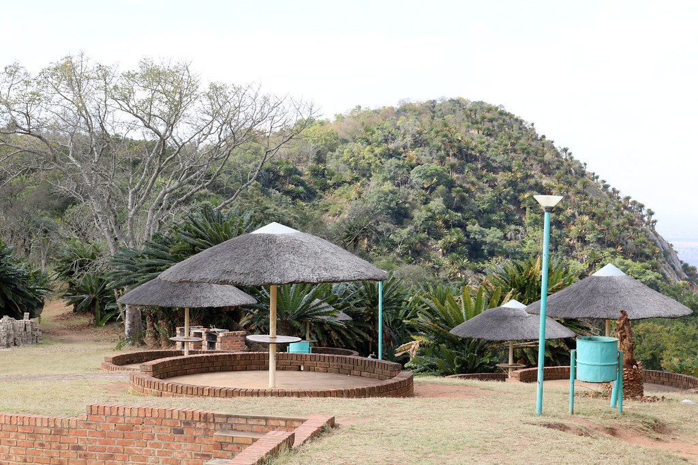
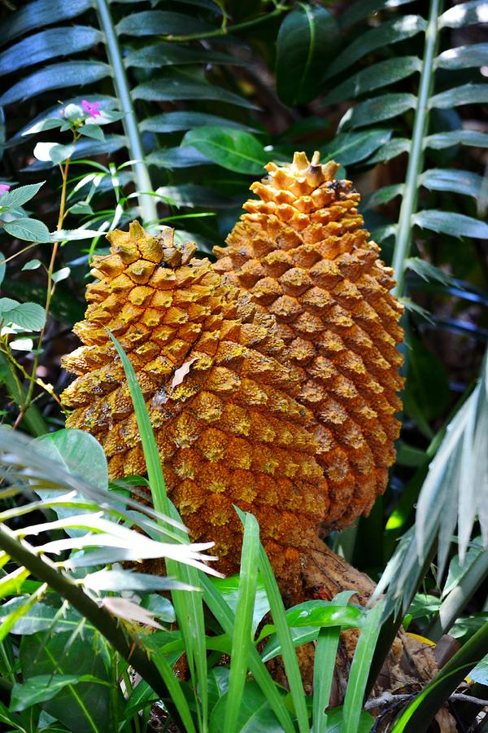

Modjadji Cycad Reserve
42 Reviews
Location: Near Duiwelskloof, Limpopo Province, South Africa





Botanical and Cultural Gem
The Modjadji Cycad Reserve is home to the world’s largest population of the rare Encephalartos transvenosus cycad. It is also culturally significant due to its connection to the Rain Queen Modjadji, a mystical figure in local tradition.
Prices
Adult - R50 / day
Child - R25 / day
- Rare Flora Features over 10,000 protected Modjadji cycads, creating a prehistoric forest atmosphere.
- Cultural Significance Named after the legendary Rain Queen, Modjadji, who is believed to have mystical powers to bring rain.
- Walking Trails Scenic trails allow visitors to explore the reserve and spot wildlife such as bushbuck and birds.
- Interpretive Centre Learn about the history of the Rain Queen and the ecological importance of cycads.
Nestled in Limpopo, the Modjadji Cycad Reserve offers a unique blend of ancient plant life and rich cultural history. Its dense cycad forests, associated with royalty and rain-making traditions, make it a peaceful retreat and a must-visit for nature lovers and history enthusiasts alike.
Add your comment here
Comments
Sakhile Shabalala
Its's great!